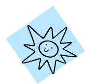
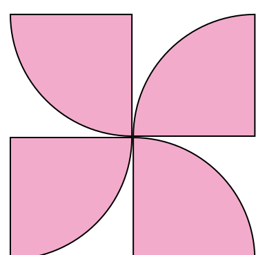
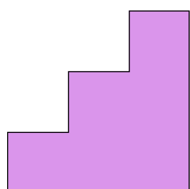

Організовую івенти, якими живу
куся
Трошки про мене:
Досвід в організації івентів різних форматів: гібридні, онлайн, офлайн.
Робота з великими командами та учасниками (до 600 людей).
Успішна реалізація концепцій івентів, робота з декором, кейтерингом, бюджетами та логістикою.
В івентах ціную цікаві, продумані до найменших деталей концепції і наявність благодійної складової.
My Portfolio
Онлайн івенти і гібриди

Офлайни для середніх команд
Великі івенти і конференції

Автоматизація процесів
Відгуки учасників і замовників івентів, організованих мною
Зв’язок зі мною


Онлайн та гібридні івенти
- Маю досвід повного циклу організації онлайн та гібридних заходів: від креативної розробки концепції до технічного супроводу трансляцій та роботи на локаціях.
- Організувала та провела понад 10 онлайн-івентів для команд від 10 до 80 осіб, а також координувала масштабні інтерактивні активності для 130+ учасників.
Основні кейси:
- Гібридні заходи зі зйомками:
- Підготовка локації до трансляції: зонування простору, підготовка реквізиту, організація гримерок та допоміжних кімнат.
- Робота з акторами та ведучими: координація таймінгу, забезпечення комфортних умов для роботи.
- Співпраця з технічними підрядниками: асистування команді трансляторів, оперативне вирішення організаційних питань, контроль дрібних деталей під час прямого ефіру.
- Закупівля та управління реквізитом: формування списку необхідних матеріалів, закупівля, контроль доставки, організація зберігання.
- Онлайн-івенти та інтерактиви:
- Креативні внутрішньокорпоративні івенти:
- 14 лютого (2023): тематичний онлайн-квіз та "Валентинова пошта".
- Розробка сценарію та створення питань.
- Дизайн презентації для інтерактиву.
- Проведення заходу та технічний супровід.
- Мануальна розробка персональних валентинок: фоторедагування, створення індивідуальних листівок для кожного учасника, ручна розсилка.
- 14 лютого (2024): оптимізація процесу – автоматизація створення та розсилки валентинок.
- 8 березня: онлайн-квіз та благодійна лотерея.
- Розробка концепції, підготовка питань.
- Інтеграція чат-бота для проведення лотереї.
- Створення та розсилка персоналізованих стікерпаків для учасників.
- 14 лютого (2023): тематичний онлайн-квіз та "Валентинова пошта".
- Креативні внутрішньокорпоративні івенти:
- Онлайн-івенти для знайомства команд:
- Ведення онлайн-івенту у форматі гри, під час якої учасники відгадували факти про колег.
- Серія окремих онлайн-заходів, спрямованих на знайомство колег між собою.
- Підготовка інтерактивної програми для кожного івенту:
- Розробка блоку запитань про співробітників.
- Проведення опитування серед учасників для збору персональних фактів.
- Створення квізу у Kahoot на основі зібраної інформації.
- Інші онлайн-заходи:
- Організація та проведення гри Gartic Phone.
- Віртуальні командні ігри та вечори для неформального спілкування.
- Масштабні онлайн-активності:
- Секрет Санта для 130 учасників: організація корпоративного обміну подарунками.
- Онлайн-книжкове ком'юніті: створення та адміністрування внутрішньої спільноти книголюбів.
- Акція "Таємний Книгодарувач" до Міжнародного дня дарування книг.
Ключові навички у межах цих проєктів:
- Розробка креативних концепцій онлайн-активностей.
- Управління командними іграми та інтерактивами.
- Організація масштабних активностей для великих груп (130+ осіб).
- Використання інструментів онлайн-комунікації та гейміфікації (Kahoot, чат-боти, Zoom, Google Meet).
- Фоторедагування та створення графічних матеріалів.
- Оптимізація та автоматизація процесів у межах івентів.
Офлайн-заходи середнього масштабу
- Організовувала камерні події для груп до 30 осіб, де особлива увага приділялася створенню комфортної атмосфери, неформальному спілкуванню та інтерактивним елементам.
- На моєму рахунку 5 таких заходів, що охоплювали різні формати — від дружніх тематичних зустрічей до освітніх тренінгів.
Основні кейси:
- Лофт-зустрічі та тематичні вечірки:
- Підбір та оренда локацій (лофти, апартаменти), які відповідають концепції події.
- Організація кейтерингу: замовлення їжі, алкоголю, напоїв з урахуванням дієтичних уподобань учасників.
- Інтерактивна програма: розробка простих ігор та активностей, які сприяють спілкуванню та створюють невимушену атмосферу.
- Декорування простору відповідно до тематики заходу (за потреби).
- Виїзні заходи у заміських будинках:
- Пошук та оренда великих будинків із басейном, терасою або великою територією поблизу Києва.
- Комплексна організація заходу: закупівля продуктів, алкоголю, планування бюджету.
- Формат “готування разом”: розробка меню, яке передбачає спільне приготування їжі учасниками.
- Створення care station: зона з напоями, снеками, засобами для комфорту учасників протягом дня.
- Транспортування учасників (за потреби).
- Вечері у ресторанах:
- Вибір закладів із можливістю бронювання окремого залу чи приватної зони для груп до 25 осіб.
- Менеджмент меню: збір побажань від учасників, узгодження страв та напоїв із закладом.
- Інтерактивне дозвілля: підбір та організація настільних ігор, легких активностей, що сприяють невимушеній комунікації.
- Корпоративні міні-івенти та освітні заходи:
- Офісні активності: прикрашання офісу до святкових подій, створення зони для кава-брейків.
- Організація тренінгів (наприклад, навчання з першої домедичної допомоги):
- Підбір та бронювання локації.
- Забезпечення кава-брейку.
- Комунікація з учасниками та тренером.
Ключові навички у межах цих проєктів:
- Організація логістики заходів “під ключ”.
- Робота з постачальниками (кейтеринг, оренда, декор).
- Бюджетування камерних заходів.
- Комунікація з учасниками, збір їхніх побажань.
- Створення дружньої, невимушеної атмосфери на подіях.
Масштабні кнференції, корпоративи, режисерські постановки
- Маю досвід організації подій від 180 до 600 учасників, що передбачали комплексне управління різними процесами: від логістики та роботи з підрядниками до координації команд та впровадження інноваційних механік взаємодії з аудиторією.
- Під час цих заходів, завдяки благодійним активностям (аукціон, донатні паузи, інтерактиви), спільно з командою вдалося зібрати майже 1 млн грн для Хартії та Госпітальєрів. На зібрані кошти було придбано пожежну машину для Харківської області, яка тепер допомагає ліквідовувати наслідки обстрілів.
Основні кейси:
- Зимовий корпоратив для 180 учасників (Київська локація)
- Формат: гібридний івент (оффлайн + онлайн-трансляція)
- Ключова особливість: благодійна інтеграція у форматі розважального шоу
- Пошук та оренда локації, що відповідала технічним вимогам для трансляції.
- Організація кейтерингу, бару, декору, фото- та відеозйомки.
- Координація роботи технічних підрядників під час трансляції.
- Підготовка кошторису, контроль витрат.
- Розробка благодійної концепції заходу:
- Ідея “Хто хоче зібрати на тачку” – адаптація формату популярного телешоу "Хто хоче стати мільйонером" у благодійному форматі.
- Інтерактивні донат-паузи у стилі "магазин на дивані".
- Пошук реквізиту, написання сценарію.
- Формування креативних “товарів” для продажу.
- Створення легкої атмосфери, що мотивувала учасників активно донатити.


- Внутрішня конференція на 350 учасників
- Формат: офлайн конференція + донатні інтеграції.
- Ключова особливість: автоматизація реєстрації та акцент на фандрейзинг.
- Розробка концепції декору локації.
- Організація інтерактивних зон.
- Сценарій та фандрейзинг: донатні студії між виступами.
- Координація роботи хелперів.
- Управління реєстрацією:
- Створення автоматизованої системи реєстрації учасників із QR-кодами.
- Організація onsite-реєстрації: сканування кодів, друк бейджів.
- Бар та кейтеринг:
- Розрахунок кількості алкоголю та напоїв для afterparty.
- Підбір барменів, розробка коктейльної карти.


- Відкрита конференція-корпоратив на 600 учасників
- Формат: офлайн фестивалі, корпоративи
- Ключова особливість: багатозадачність, залучення до всіх ключових процесів
- Робота з персоналом: координація роботи хелперів, барменів, кейтерингу, клінінгу.
- Розширення системи реєстрації: удосконалення системи QR-кодів та бейджів.
- Комунікація з підрядниками.
- Оформлення локації; Допомога у розробці декору. Власноручне створення костюмів для аніматорів та офіціантів (пошиття костюмів).
- Управління процесами на локації: оперативне вирішення організаційних питань під час заходу.
- Співпраця з режисером проєкту, керівником та командою івент-менеджерів; Участь у розробці сценарію, схеми розташування зон, таймінгу заходу.


- Режисерсько-постановчі заходи з творчою командою (~100 осіб)
- Формат: театральні вистави, творчі шоу.
- Ключова особливість: управління великою креативною командою, постановка комплексних номерів.
- Постановка вистав, поєднання різних жанрів.
- Робота з командою ~100 осіб.
- Організація міждепартаментної співпраці.
- Планування та встановлення декорацій.
- Залучення нових учасників, тімбілдинги.
- Комунікація з адміністрацією університету.
- Управління великими командами.
- Координація складних багаторівневих процесів під час заходу.
- Організація реєстраційних систем.
- Розробка фандрейзингових активностей, інтеграція благодійності у програму.
- Бюджетування, контроль витрат.
- Взаємодія з підрядниками.
- Постановка творчих шоу.
- Комунікація з офіційними структурами.
- Реалізація креативних ідей.
Ключові навички у межах цих проєктів:
Оптимізація процесів та автоматизація
- Я впроваджую інструменти та рішення, які допомагають значно спростити організаційні процеси, зменшити кількість рутинної роботи, заощадити час команди та підвищити ефективність підготовки до заходів.
- Мій підхід: один раз інвестувати час в автоматизацію, щоб потім мінімізувати ручну працю та сфокусуватись на стратегічно важливих завданнях.
Основні досягнення:
- Автоматизована система реєстрації учасників із QR-кодами
- Проблема: Друк 600+ бейджів заздалегідь спричиняв помилки, витрати, непередбачених гостей та екологічні збитки.
- Рішення: Розробила Google Apps Script для генерації PDF-бейджів і QR-кодів, розсилки запрошень та друку бейджів на місці при скануванні.
- Результат: Реєстрація 30 сек (замість 2-3 хв), зниження витрат, екологічність, гнучкість для незареєстрованих гостей.
- Автоматична розсилка валентинок
- Проблема: 30 годин ручної підготовки валентинок у 2023 році.
- Рішення: Google Apps Script автоматично генерує персоналізовані PNG-листівки з Google Форми та надсилає їх поштою.
- Результат: Економія 30+ годин, інтерактивність заходу, мінімізація помилок.
- Бриф для замовників заходів
- Проблема: Хаос у комунікаціях, втрата деталей при першому обговоренні замовлення івенту.
- Рішення: Створила анкету для збору цілей, бюджету, формату, меню, технічних потреб та контактних осіб.
- Результат: Узгодження скорочено на 1-2 дні, зниження ризику упущень, єдиний стандарт для команди.
- Візуалізований каталог концепцій івентів
- Проблема: Текстові файли ускладнювали підбір ідей.
- Рішення: Систематизувала концепції в Notion із картками, стислими описами та візуалізацією.
- Результат: Швидший підбір івентів, полегшений вибір для клієнтів.
- Створення лендингів
- Володію базовими HTML, CSS, JavaScript.
- Створювала лендинги для онлайн-івентів, інтерактивні сторінки для квестів, зверстала це портфоліо))
Ключові навички у межах автоматизації:
- Google Apps Script (автоматизація листів, створення html і png, QR-коди).
- API інтеграції для роботи з документами та зображеннями.
- Google Workspace (Forms, Sheets, Docs, Drive).
- HTML, CSS, JavaScript – базова верстка лендингів.
- Notion – систематизація контенту та створення баз знань.
- Canva, Figma
Хочу підсвітити чудову роботу Каракусі: зустріла нас на локації, все показала, розказала коли буде доставка, що у замовленнях, комунікація по списку того, що потрібно не забути забрати, по скаргах від сусідів і тд – все супер чітко. Дуже дякую!
Гра сподобалась дуже сильно! Я не змогла бути до кінця, за що щиро шкодую. Думаю, те, що людина шкодує, бо пропустила частину корпоративного івенту, – чудове свідчення того, що цей івент був вдалим :) Дуже сподобалася ведуча: провела подію максимально легко, було відчуття, наче вона частина нашої команди, і давно нас знає.
Мені все сподобалось. Каракуся просто вразила своєю професійністю.
Каракуся зробила робота на 120%. Все чітко, зважено, як ми любимо. За все потурбувалась, про всіх подумала. Організація – на висоті. Плюс була на контакті та відкрита до нових пропозицій, що дало можливість трохи розширити варіативність меню. Тож, все було якісно та гарно, і попри тему зустрічі, все пройшло дуже гарно. Маю приємні враження.
Каракуся дуже круто все планувала, сама все дивилась, від організатора я в захваті;
Величезне дякую за організацію, не дивлячись на те, що я затягувала із відповідями Каракуся організувала все вчасно і на суперському рівні. Я зверталась із декількома забаганками і все спрацювало як нам того хотілось. Щодо локації також, не можу не відмітити, що з проблемою шуму з сусідніх квартир каракуся справилась дуже оперативно, і взагалі протягом вечору була на зв’язку по всіх питаннях. Дуже і дуже вдячна за організацію!